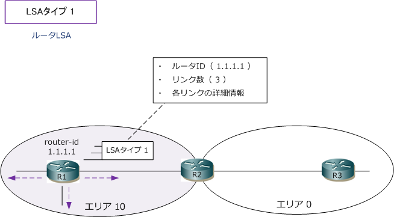
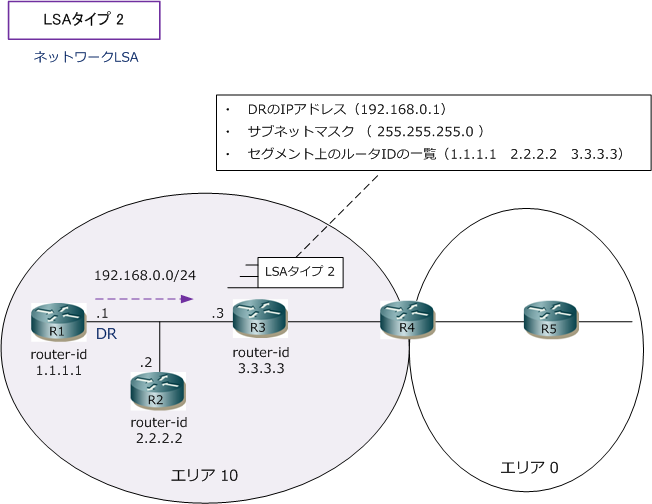
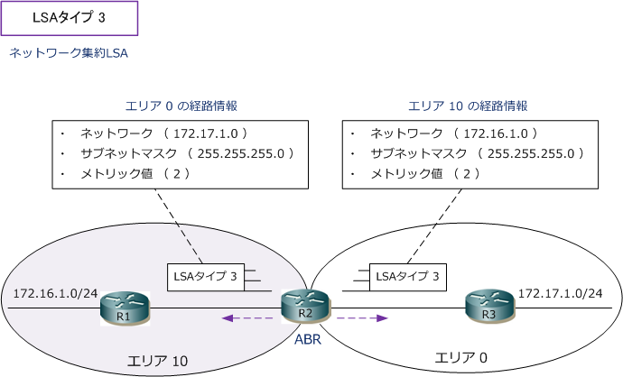

OSPF - LSA Type 1 / LSA Type 2 / LSA Type 3
OSPF - LSAタイプ
LSAは、OSPFルータのLSDB（リンクステートデータベース）を作成する上で基礎的な要素となります。 LSAタイプには「1 ～ 11」までありますが、Ciscoルータでサポートしているのは「 1 ～ 5、7 」です。 LSAタイプによって、エリア内だけでフラッディングされるもの、ABRを越えてフラッディングされる ものがあります。各LSAタイプが、どのような範囲で、どのような情報を通知するのかを見ていきます。
OSPF - LSAタイプ 1
LSAタイプ1は、自身のエリア内でのみフラッディングされます。LSAにはOSPFルータID、リンクの数、 各リンクの詳細情報（IPアドレス、コスト値等）が含まれています。LSAタイプ1は全てのOSPFルータが 生成します。ルーティングテーブルでは、LSAタイプ1の経路情報は「Ｏ」のコードが付けられています。

LSAタイプ1のLSAは、show ip ospf database routerコマンドで確認することができます。
OSPF - LSAタイプ 2
LSAタイプ2は、自身のエリア内でのみフラッディングされます。LSAタイプ1は、すべてのOSPFルータが LSAを生成していましたが、LSAタイプ2はDRが生成します。このLSAにはDRのIPアドレス、セグメントの サブネットマスク情報、セグメント上のルータIDの一覧などが含まれています。ルーティングテーブルでは、 LSAタイプ1と同様に、LSAタイプ2の経路情報は「Ｏ」のコードが付けられています。

LSAタイプ2のLSAは、show ip ospf database networkコマンドで確認することができます。
OSPF - LSAタイプ 3
LSAタイプ3は、異なるエリアへフラッディングされます。LSAタイプ3はABRが生成します。このLSAには 各エリアの経路情報やコスト情報が含まれています。ルーティングテーブルで、LSAタイプ3の経路情報は エリア間ルートを示す「O IA」のコードが付けられています。

LSAタイプ3のLSAは、show ip ospf database summaryコマンドで確認することができます。